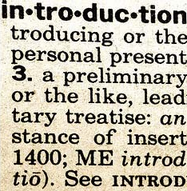

Sprint 0: Course Formalia
Table of Contents
1 About this Sprint
 This Sprint introduces the course and the course structure.
2 Sprint Goals
Course Structure: The student will be familiar with the structure of the course.
3 Readings
3.1 Course Formalia
3.2 Assignment Submission
Read and understand the following
3.2.1 Assignment Submission and Dates
- The course is offered during two study periods (1 semester)
- During this time, you are expected complete all assignments and submit them for marking.
- Based on the marking, you may need to complement your submissions with additional material.
- Complementing assignments can be done during the semester, within four weeks of the end of the semester, or in August.
- Complementing assignments after the semester is only allowed if your original submissions were made during the semester and were non-trivial.
- An assignment may only be complemented twice.
- Given these constraints, you are free to plan your submissions as you see fit.
3.2.2 Submissions
Assignment submissions are done via e-mail as a written report or a well-annotated set of presentation slides, unless otherwhise stated.
3.2.3 Resubmissions
In a resubmission, please:
- highlight changes you have made!
- discuss, where applicable, the changes you make
3.2.4 A Note On Confidentiality
You will submit your assignments on the course homepage, where the course managers will review them in order to give you feedback and to examine you on the course. You will also form study teams to review each other’s work. Apart from this, no-one else will see your assignments unless you decide to show them. There are ways to make sensitive information less sensitive. Some generic advice is to:
- Describe the types of stakeholders involved rather than the specific roles.
- Report numbers as percent of a total instead of the absolute numbers (for example, a process step may take x days or y% of the entire process), or express time in some generic “time unit” measure.
- If the motivations for your choices are sensitive, then keep them in a separate document that you can share with the course managers, and share a less sensitive version with your study team.
4 Experiential Learning
4.1 TODO Buy Course Books
4.1.1 Official Course Book
 M.Cohn, Succeeding with Agile: Software Development Using Scrum, Addison-Wesley Professional, 2009. ISBN-10: 0321579364 | ISBN-13: 978-0321579362.
M.Cohn, Succeeding with Agile: Software Development Using Scrum, Addison-Wesley Professional, 2009. ISBN-10: 0321579364 | ISBN-13: 978-0321579362.
4.1.2 Additional Books
 J. Rasmusson The Agile Samurai, Pragmatic Bookshelf, 2010. ISBN-10: 1934356581 | ISBN-13: 978-1934356586.
J. Rasmusson The Agile Samurai, Pragmatic Bookshelf, 2010. ISBN-10: 1934356581 | ISBN-13: 978-1934356586.
This book contributes some additional perspectives to the main course book. Reading both will give you fairly ok background knowledge on agile/lean (even if Lean is never explicitly mentioned).
D. Leffingwell Agile Software Requirements, Addison-Wesley Professional, 2011. ISBN-10: 0321635841 | ISBN-13: 978-0321635846.
Gives a good overview of what is going on outside the project sprints. Addresses the question how you set up your entire organisation such that you transfer your market strategies and roadmaps into specific user stories that are implementable by sprints.
 M. Poppendieck, T. Poppendieck Lean Software Development, Addison-Wesley Professional, 2003. ISBN-10: 0321150783 | ISBN-13: 978-0321150783.
M. Poppendieck, T. Poppendieck Lean Software Development, Addison-Wesley Professional, 2003. ISBN-10: 0321150783 | ISBN-13: 978-0321150783.
Goes through the lean principles and discuss how they apply to software. I find this book particularly interesting because it is a third of the size of any other book on lean I have read, and yet conveys all the relevant information. Somehow, I can’t help but think that the authors of the other lean books have missed the point.
 Your Book
Your Book
If you find a book that you think should be included here, please send me an e-mail (address in the footer), and tell me about the book and why it should be included.
4.2 TODO Post on Discussion Board
Join the Course Discussion Board and, once your request to join has been approved, post a short introductory paragraph about yourself. This provides info to your fellow students, and also verifies that you have joined the discussion group and can post to it.
Configure the group settings to send messages posted to the group as an email to yourself.
4.3 TODO AdobeConnect
4.3.1 Equipment and Tutorials
- Get a decent headset. We recommend that you make sure that you have a decent headset with microphone (for example, the USB headset Logitech H390, or equivalent from any other brand). The sound quality in your mobile phone headsets is usually not sufficient.
- Go through the Adobe Connect Tutorials.
4.3.2 Test
The course has a dedicated Adobe Connect meeting room that is always open and available for you to use – for example for collaborating with other students in the course. At certain regular times (to be announced later) teachers in the course are also online here for discussions.
Because of reasons, we do not publish the address to the meeting room here. Instead, you will find it in the Course Discussion Board.
Once you are “in”, there is an audio setup guide that you should go through the first time you visit.
Experience tells us that the first times you connect there will be various problems before you have the audio working. Expect this, and plan accordingly.
4.3.3 Known problems
- On OSX, the right audio source/destination need to be selected before you connect to the Adobe Conenct meeting room. Alt-click on the speaker-icon in the menu bar to check this.
4.4 TODO Get Access to Articles
Since this is, after all, a Master’s level course, we make heavy use of research articles. References to these are listed as Readings under each module.
Because of copyrights, we are not able to publish the actual articles on this site. If you are registered on the course you will gain access to a compendium with the referenced articles.
You will also, as a student, have access to the university’s online database.
4.5 TODO Establish Agile/Lean Backlog
Create an Agile/Lean Backlog. As a start, this backlog ought to contain the sprints from this course, in the order you would like to study them. Add other items into the backlog based on what you would like to learn more about, and what you would like to achieve in your own organisation. Order the items in your Agile/Lean backlog according to your needs and priorities.
This Agile/Lean backlog is revisited in each of the sprints to keep it up to date.
5 Sprint Acceptance Test
You have completed this sprint when you have:
- Viewed the Course Formalia lecture
- Acquired necessary equipment and tested AdobeConnect
- Signed up on the course discussion forum and posted an introduction about yourself.
- Browsed books for the course and ordered the ones you wish to buy.